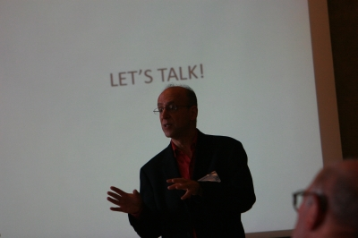
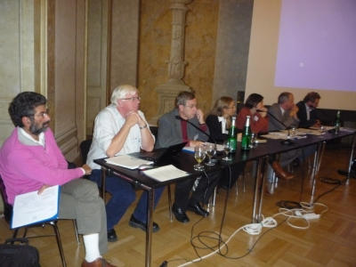
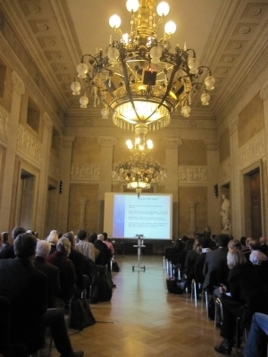
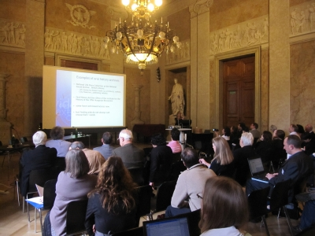

The European arts and humanities infrastructure projects DARIAH and CLARIN jointly organised and convened the conference Supporting the Digital Humanities 2010 (SDH 2010) and the 2010 Networking Event for European Research Infrastructures (NEERI 2010) from October 19-21, 2010 at the Technical Universitiy of Vienna.
The European arts and humanities infrastructure projects DARIAH and CLARIN jointly organised and convened the conference Supporting the Digital Humanities 2010 (SDH 2010) and the 2010 Networking Event for European Research Infrastructures (NEERI 2010) from October 19-21, 2010 at the Technical Universitiy of Vienna.
Whereas SDH2010 focused on the types of research made possible by research computing, NEERI 2010 centred on the technical, architectural and social challenges of building the infrastructure.
SDH 2010
On October 19th and 20th, 2010, approximately 160 delegates attended two days of presentations and discussions on a range of topics at the cutting edge of humanities research, focusing on how infrastructures can broaden and enrich research activities across the spectrum of the arts and humanities.
The conference began with an interesting keynote from Neil Fraistat, director of the Maryland Institute for Technology in the Humanities and Co-chair of centerNet, on the subject of "Digital Humanities Centres as Cyberinfrastructure." Professor Fraistat emphasized the importance of DH centres in providing infrastructure services to the wider community - and in turn, how the implementation of such infrastructures can break down the tendency for resources to become 'siloed' in their local context.
The parallel sessions of SDH 2010 covered such diverse topics as manuscript studies, linguistics, musicology, archaeology and socio-economic history. Delegates from many international universities and research institutions presented aspects of contemporary research in the context of research infrastructures. Many discussions focused on how to take arts and humanities research to the proverbial 'next level' in terms of its degree of integration and interoperability with similar resources at different locations.
There was a strong emphasis on community-building and on the need for infrastructures to support researchers' efforts at collaborative projects. Wider access to data, and to a platform upon which to work in collaboration with others, was seen as critical to expanding the context of current and future research.
Many scholars reported a strong involvement with technologies which support their research, but lamented the lack of a more formally established, and usable, research infrastructure to underpin their work. This echoes sentiments expressed by many members of the DARIAH community: the time is now for a research infrastructure for the arts and humanities.
NEERI 2010
The Networking Event for European Research Infrastructures (NEERI 2010) took place at the Technical University of Vienna on October 21, 2010. NEERI 2010 was the second networking event of its kind, providing a follow-up to NEERI 2009 held in Helsinki. The goal of NEERI 2010 was to exchange ideas on a number of topics relevant for research infrastructures and to clear common ground on the further development and application of these topics. NEERI focuses on what we share and what we can learn from each other. Examples of such commonalities are architectural issues, communication with users and integration of services and tools.
Keynote: Laurent Romary
The day commenced with a very interesting keynote from Laurent Romary in which he discussed the European Commission’s Report of the High-Level Expert Group on Scientific Data (October 2010), entitled Riding the Wave: how Europe can gain from the rising tide of scientific data and its impact on the humanities and social sciences.
The expert group considers it of utmost importance that research infrastructures establish collaboration in all important organizational and technical aspects, towards a vision of a "scientific e-infrastructure that supports seamless access, use, re-use and trust of data. In a sense, the physical and technical infrastructure becomes invisible and the data themselves become the infrastructure – a valuable asset, on which science, technology, the economy and society can advance."
This would enable better collaboration among researchers, increase the productivity of research, allow for sharing, use and re-use of data, while at the same time preserving data authenticity, integrity and trustworthiness. It is both a challenge and an opportunity to establish proper data management and data integration infrastructures - having in mind the scale, complexity and diversity of data, as well as its continuously accelerating growth.
Beneficiaries of such established, living and collaborating research infrastructures would comprise not only researchers, but also the general public, funders and policy makers, as well as enterprises and industry. Therefore, EU and national agencies must define clear strategies and ensure sufficient resources for their implementation.
The expert group had developed an initial wish list (adapted from a PARADE White Paper) containing minimum requirements that such an infrastructure must fulfill: long term preservation, persistent identification, standardization of metadata, format- and semantic-level interoperability, proper implementation of access rights, enabling large groups of researchers to operate on the data, regular quality assessment and metrics on data usage, availability and reliability to feed back into further improvement of the infrastructure.
Connecting the European Grid Infrastructure (EGI) to Research Communities
Steve Brewer, Chief Community Officer, European Grid Infrastructure (EGI)
Steve Brewer gave an overview of EGI development and how EGI works towards achieving the goal of increasing the number of scientists and research groups that actively use and benefit from the grid. Communities have to be actively supported technically by enabling innovation in technologies (grids, clouds, virtualization) and innovation in software which provide reliable and persistent platforms, and also by supporting international research (e.g. ESFRI).
Additionally, human networks have to be developed and cultivated, because ultimately, humans are the users of such infrastructures. This is through both general (training events, material, helpdesks, user and technology meetings) and discipline-specific services. Continuous definition and verification of user requirements has to be established as a main focus. Initiatives need to be grouped into virtual organizations to better address issues through setting up of virtual research communities, which is certainly an approach that can be re-used for humanities- and social sciences- oriented research infrastructures.
Research Infrastructures and the DARIAH Approach
Sheila Anderson, Kings College London
Sheila Anderson opened up by discussing the notion of data from two perspectives: data as discrete sources, and data as information used and developed by communities. She presented DARIAH’s approach towards supporting researchers in their choice of research networks via architectural participation and collective intelligence.
DARIAH is approaching research infrastructure development through direct engagement with users, i.e. via seminars, workshops, discussion groups to raise awareness and help with both general and concrete research questions. It was further emphasized that awareness-raising of research infrastructures should not be sole task of the projects. There is also a strong need for funders and evaluators to endorse and encourage their usage.
The collective intelligence approach, which integrates data from isolated information sources and feeds this information back to the community, generates new insights into the data itself, as well as revealing details about who is using the data and how they are using it. One possibility is to include these activities in educational institutions via, for example, Master’s programs, as well as educating and supporting researchers, and federation of data with other research infrastructures (e.g. CLARIN).
Grids, Clouds and Research Infrastructure
Peter Wittenburg, Head of the Language Archive, Max Planck Institute for Psycholinguistics
Peter Wittenburg gave a very interesting definition of grid and cloud terms, and outlined how a humanities researcher would benefit from such a resource, having in mind the nature of research in humanities: it is highly unpredictable; usually small and focused projects but with scattered and diverse data; and that projects have a need for data to be sustainable.
However, there are still issues with willingness of researchers to share their data, most probably due to amount of non-automated and intellectual work invested in the data - researchers are sensitive to ownership. In general, computing over structured data is not an issue here, rather is the question how to quickly enable tools that can "simulate human mind".
DARIAH and CLARIN are certainly large European e-infrastructure projects trying to address some of these issues - to enable reliable, sustainable and trustworthy data storage that ensures data integrity, authenticity, visibility, accessibility, interpretability, etc. Such infrastructure must implement corresponding mechanisms for authorization and authentication, but also offer services and tools to work across scattered data resources.
How do grid- and cloud-related projects contribute to humanities and social Sciences (SSH)? Grids are mostly used for data storage in SSH sector, despite projects such as TextGrid (Germany; SSH researchers using TextGrid are not even aware if they are using cloud services or not. This may be considered as positive outcome). Whether SSH can benefit from grids/clouds is still not completely clear. There are many issues concerning financing, data ownership, long term data accessibility- especially when it comes to usage of cloud-based services - "is AMAZOOGLE for data what Elsevier are for publications"?
Even if cloud-based services do not have to be commercial, there is still considerable upfront work to enable research clouds to be interoperable and unburdened from commercial use. Standardization is certainly an issue (work started at DMTF, see here). In the end, it is all about services that shall be offered to the researchers. Still the question is whether SSH related e-infrastructure projects can make an optimal use of all the knowledge and experience from decades of grid development?
Bob Jones, Senior Staff Member, CERN
Bob Jones provided insight into the Pan-European computing infrastructure, including high-speed networking (GEANT) and suggested opportunities and challenges for how e-infrastructures can evolve in the future to satisfy Europe's research communities’ requirements.
The European E-Infrastructure Forum (EEF) is seen as one of the primary instruments which facilitate discussion of the principles and practices of the creation of synergies between various and distributed e-infrastructures, with the common goal of achieving interoperability. The Forum held several workshops in 2009 and 2010 to gather further information about ESFRI project requirements. In total, 28 projects were consulted including 5 from the SSH sector (CLARIN, ESS, DARIAH, SHARE, CESSDA). The resultant project requirements can be summarised as: usage of standards in technology and metadata; interoperability; rights management; advanced services for collections management; multilingual support; linked data and persistent identifiers; among others.
These issues are especially complex to address when one considers combination of grids, clouds, supercomputers and volunteer computing as a combined e-infrastructure ecosystem. There are a lot of issues to be worked out, and there is not yet a single, cohesive solution. It could perhaps be a useful approach to start to aim for interoperability and keep applications agile. The question still remains how could this be applied in the SSH sector (as P. Wittenburg also states).
Next steps could address the harmonization of already existing services - by enabling them to talk to each other (interoperability, single-sign-on, standards, persistent storage and identification, monitoring, billing and accounting services) as well as improved user support, training and consultancy. Continuous work on the requirements and feedback from users and usage data has to be invested. The process is durable and iterative, and can be strengthened by joint projects and activities.
Rutger Kramer, Software Development Coordinator, DANS
Rutger Kramer emphasized the possibility for using existing grid technologies and referenced the CESSDA-PPP Report on usage of grids and clouds in e-infrastructure. Even though the report gives quite comprehensive overview of both grid and cloud technologies in terms of possibilities and drawbacks, it focuses on several main use-cases which are related to cross-national comparative research, data analysis, data set harmonization, and survey producers. The report however does not make a clear recommendation for any particular grid/cloud technology and is missing further details on areas of overlap between the explored use-cases in a common e-research infrastructure.
Rutger pointed out that, in general, problems are not to be seen solely from the aspect of the possibilities/drawbacks of the existing technologies, rather it is about accelerating the coordination and distribution of efforts in development of standards for registries and information exchange, services (visualization, transcription, etc) and persistent storage into a common platform. Considering grids as such a common platform, future e-infrastructure projects could use a single sign-on scheme or similarly implemented mechanisms to share resources. It certainly needs enhancement and adaptation; however it could be used as a basis for building of applications. Re-using existing grid platforms would be less costly and hazardous.